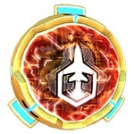
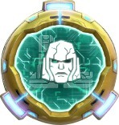
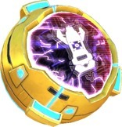
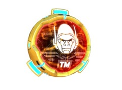

Улучшайте свои здания, оснащая здания этими Силовыми ядрами! (Характеристики указаны для золотых энергетических ядер 1-го уровня).
Важные факты про Ядра Ботов: |
 |
 |
||
| Энергия | Авторемонт | Тактика | Стенолом | Атака |
| +5% к здоровью бота. | Восстанавливает 0,9% здоровья каждые 5 сек. | Бот сосредотачивается на защитных зданиях и ботах аванпостов в течении 32 сек. после высадки | Урон стенам увеличен на 14%. Действует на обычные атаки, и способности Сладжа и Ноускон. | Увеличивает урон обычных атак на 4%. |
 |
 |
 |
|
| Бронежилет | Летучая смесь | Импульс смерти | Покрытие тритилиума |
| На 15% уменьшает урон от Мортир и Ракетных Комплексов. | Увеличивает урон особого умения на 5%. | При 0 здоровья произойдет ЭМИ взрыв, отключающий цели на большом участке в течении 3.8 сек. | Уменьшает урон от Авто Пушек, Лазерных Турелей, Энерго Башен и Миниганов на 18%. |
 |
 |
 |
| Генератор лучей | Отражающее покрытие | Передовые указы |
| Увеличивает эффект восстановления на 5%. | 32%защита от Лазерных Турелей и Пучковых Лазеров. | Увеличивает урон особого умения на 16%. |
 |
 |
 |
|
| Матрица Оптимуса Прайма | Корона Старскрима | Пистолет Рейзорклоу | Корона Гримлока |
| Устанавливается на: Оптимус Прайм Увеличивает здоровье Оптимуса Прайма на 5.5%. Пока мы не станем едины!. |
Устанавливается на: Старскрим Корона создает щит отражающий 12% урона обратно атакующим! Увеличивает урон особого умения на 16%. |
Устанавливается на: Рейзорклоу Увеличивает урон умения Рейзорклоу на 5% и скорость передвижения на 5%. |
Устанавливается на: Гримлок Увеличивает урон умения Гримлока на 5% и скорость передвижения на 5%. |
|  |  |
||
| Хром Джетфайра | Закаленный в боях Мегатрон | Меч Мотормастера | Матрица Родимуса Прайма |
| Устанавливается на: Джетфайр Хромовое покрытие отражает 7% урона обратно атакующим! Увеличивает урон особого умения на 16%. |
Устанавливается на: Мегатрон Увеличивает здоровье Мегатрона на 5.5%. |
Устанавливается на: Мотормастер На 10% уменьшает урон от Энерго Башен, Пучковых Лазеров и Автопушек |
Устанавливается на: Родимус Прайм На 10% уменьшает урон от Энерго Башен, Пучковых Лазеров и Автопушек. |
|  |  |
 |  |
| Броня Элиты-1 | Булава Лагната | Оптимус Трансметал | Мегатрон Трансметал |
| Устанавливается на: Элита-1 Когда твоё здоровье падает ниже 30%, ты становишся невосприимчивым к вх. урону и эффектам оглушения в течение 5.7 сек. |
Устанавливается на: Лагнат Когда твоё здоровье падает ниже 30%, ты становишся невосприимчивым к вх. урону и эффектам оглушения в течение 5.7 сек. |
Устанавливается на: Оптимус Праймал Восстанавливает 1% здоровья каждые 5 сек.. Всякий раз, когда Оптимус Праймал прыгает, чтобы напасть, он получает щит, который отражает 24% от вх. урона обратно атакующим в течении 6 сек. |
Устанавливается на: Мегатрон Трекс (ВЗ) Восстанавливает 1% здоровья каждые 5 сек.. Всякий раз, когда Мегатрон Трекс (ВЗ) прыгает, чтобы напасть, он получает щит, который отражает 24% от вх. урона обратно атакующим в течении 6 сек. |
 |
 |
 |
 |
| Ринокс Трансметал | Читор Трансметал | Тарантул Трансметал | Блэкарахния Трансметал |
| Устанавливается на: Ринокс Восстанавливает 1% здоровья каждые 5 сек.. Когда твоё здоровье падает ниже 40%, ты ловишь ближайших врагов в крадущие здоровья лианы на 6 сек. |
Устанавливается на: Читор При нахождении в этом режиме урон по стенам увелчивается 20%. Когда твоё здоровье падает ниже 30%, ты становишься невосприимчивым к вх. урону и эффектам оглушения в течении 3.2 сек. |
Устанавливается на: Тарантул Восстанавливает 1% здоровья каждые 5 сек.. Когда твоё здоровье падает ниже 40%, ты ловишь ближайших врагов в крадущие здоровья лианы на 6 сек. |
Устанавливается на: Блэкарахния При нахождении в этом режиме урон по стенам увелчивается 20%. Когда твоё здоровье падает ниже 30%, ты становишься невосприимчивым к вх. урону и эффектам оглушения в течении 3.2 сек. |
| Оптимус Прайм П1 | Мегатрон П1 | Бластер П1 | Саундвейв П1 |
| Устанавливается на: Оптимус Прайм Когда твоё здоровье падает ниже 30%, ты становишся невосприимчивым к вх. урону и эффектам оглушения в течение 5.7 сек. |
Устанавливается на: Мегатрон Когда твоё здоровье падает ниже 30%, ты становишся невосприимчивым к вх. урону и эффектам оглушения в течение 5.7 сек. |
Устанавливается на: Бластер Когда здоровье твоих миньйонов опускается до 0, они создают ЭМИ взрыв, оглушающий ближайшие цели на 3.8 сек. |
Устанавливается на: Саундвейв Когда здоровье твоих миньйонов опускается до 0, они создают ЭМИ взрыв, оглушающий ближайшие цели на 3.8 сек. |
| Автобот Джаз П1 | Миксмастер П1 | Уилджек П1 | Шоквейв П1 |
| Устанавливается на: Автобот Джаз Увеличивает урон Орбитального Удара на 5.5%. |
Устанавливается на: Миксмастер Увеличивает урон Орбитального Удара на 5.5%. |
Устанавливается на: Уилджек Увеличивает мощь исцеляющего луча на 5% и повышает на 10% скорость атаки бота, которого лечишь. |
Устанавливается на: Шоквейв Увеличивает мощь исцеляющего луча на 5% и повышает на 10% скорость атаки бота, которого лечишь. |
| Ультра Магнус П1 | Гальватрон П1 | Арси П1 | Найтбёрд П1 |
| Устанавливается на: Ультра Магнус Увеличивает урон особого умения на 5%. |
Устанавливается на: Гальватрон Увеличивает урон особого умения на 5%. |
Устанавливается на: Арси +5% к здоровью. Во время атаки бот делает отступающий прыжок назад каждые 15 сек., восстанавливает 7% здоровье. |
Устанавливается на: Найтбёрд +5% к здоровью. Во время атаки бот делает отступающий прыжок назад каждые 15 сек., восстанавливает 7% здоровье. |
| Рэтчет П1 | Рефлектор П1 | Гримлок П1 | Рейзорклоу П1 |
| Устанавливается на: Рэтчет Увеличивает мощь исцеления на 5% и добавляет 25% к скорости передвижения. |
Устанавливается на: Рефлектор Увеличивает мощь исцеления на 5% и добавляет 25% к скорости передвижения. |
Устанавливается на: Гримлок Увеличивает урон особого умения на 5% и создает щит, впитывающий 40% от всего урона в течении 6 сек. |
Устанавливается на: Рейзорклоу Увеличивает урон особого умения на 5% и создает щит, впитывающий 40% от всего урона в течении 6 сек. |
 |
|||
| Айронхайд П1 | Бладжеон П1 | Проул П1 | Броул П1 |
| Устанавливается на: Айронхайд +5% к здоровью и добавляет 30% шанс переключить внимание ближайшей защиты каждые 5 сек. |
Устанавливается на: Бладжеон +5% к здоровью и добавляет 30% шанс переключить внимание ближайшей защиты каждые 5 сек. |
Устанавливается на: Проул Увеличивает урон особого умения на 5% и поджигает цель, причиняя примерно 75% от урона бота в течении 6 сек. |
Устанавливается на: Броул Увеличивает урон особого умения на 5% и поджигает цель, причиняя примерно 75% от урона бота в течении 6 сек. |
| Хот Спот П1 | Тантрум П1 | Хаунд П1 | Дрегстрип П1 |
| Устанавливается на: Хот Спот Создает постоянный щит, который отражает 5% урона обратно атакующим! |
Устанавливается на: Тантрум Создает постоянный щит, который отражает 5% урона обратно атакующим! |
Устанавливается на: Хаунд Увеличивает урон особого умения на 5%. Во время атаки создает приманку каждые15 сек., имеющую 30% от твоего здоровья. |
Устанавливается на: Дрегстрип Увеличивает урон особого умения на 5%. Во время атаки создает приманку каждые15 сек., имеющую 30% от твоего здоровья. |
| Оптимус Лазер П1 | Мегатрон Армада П1 | Сильверболт П1 | Тандеркрекер П1 |
| Устанавливается на: Оптимус Лазер Увеличивает урон особого умения на 6% и создаёт щит, впитывающий 50% от всего урона в течении 15 сек. |
Устанавливается на: Мегатрон Армада Увеличивает урон особого умения на 6% и создаёт щит, впитывающий 50% от всего урона в течении 15 сек. |
Устанавливается на: Сильверболт Увеличивает урон особого умения на 5%. Во время атаки создает приманку каждые 15 сек., имеющую 30% от твоего здоровья. |
Устанавливается на: Тандеркрекер Увеличивает урон особого умения на 5%. Во время атаки создает приманку каждые 15 сек., имеющую 30% от твоего здоровья. |
| Скайдайв П1 | Скайварп П1 | Ферст Эйд П1 | Хук П1 |
| Устанавливается на: Скайдайв 50% защита от Лазерных Турелей и Пучковых Лазеров. Во время атаки, через каждые 15 сек., бот исчезает, восстанавливая 7% здоровья. |
Устанавливается на: Скайварп 50% защита от Лазерных Турелей и Пучковых Лазеров. Во время атаки, через каждые 15 сек., бот исчезает, восстанавливая 7% здоровья. |
Устанавливается на: Ферст Эйд Увеличивает мощь исцеления на 5% и добавляет 25% к скорости передвижения. |
Устанавливается на: Хук Увеличивает мощь исцеления на 5% и добавляет 25% к скорости передвижения. |
| Свуп П1 | Скурдж П1 | Скайбёрст П1 | Онслот П1 |
| Устанавливается на: Свуп Увеличивает урон особого умения на 20% и добавляет 8% защиту от Лазерных Турелей и Пучковых Лазеров. |
Устанавливается на: Скурдж Увеличивает урон особого умения на 20% и добавляет 8% защиту от Лазерных Турелей и Пучковых Лазеров. |
Устанавливается на: Скайбёрст Увеличивает мощь исцеления на 16%. Ракеты умения Первый Рубеж оглушают цели на 3 сек. |
Устанавливается на: Онслот Увеличивает мощь исцеления на 16%. Ракеты умения Первый Рубеж оглушают цели на 3 сек. |
| Санстриктер П1 | Свиндл П1 | Гноу (автобот) П1 | Гноу (десептикон) П1 |
| Устанавливается на: Санстриктер Увеличивает урон особого умения на 5%. Если ты уничтожишь цель, огонь перебросится на следующую цель. |
Устанавливается на: Свиндл Увеличивает урон особого умения на 5%. Если ты уничтожишь цель, огонь перебросится на следующую цель. |
Устанавливается на: Гноу (автобот) Скорость передвижения и атаки твоих миньйонов увелчивается на 5%. |
Устанавливается на: Гноу (десептикон) Скорость передвижения и атаки твоих миньйонов увелчивается на 5%. |
| Смоукскрин П1 | Брейк-Нек П1 | Хот Род П1 | Немезис Прайм П1 |
| Устанавливается на: Смоукскрин Увеличивает урон особого умения на 5% и уменьшает вх. урон от Мортир и Ракетных Комплексов на 7%. |
Устанавливается на: Брейк-Нек Увеличивает урон особого умения на 5% и уменьшает вх. урон от Мортир и Ракетных Комплексов на 7%. |
Устанавливается на: Хот Род Багословение Матрицы ускоряет 25% тебя и твою цель. |
Устанавливается на: Немезис Прайм Багословение Матрицы ускоряет 25% тебя и твою цель. |
| Альфа Браво П1 | Лонг Хоул П1 | Мираж П1 | Брейкдаун П1 |
| Устанавливается на: Альфа Браво Увеличивает твой обычный урон вражеским ботам и Гештальтам на 5%. Когда ты используешь умение, ты маскируешь себя в выхлопном дыме, который поглащает 50% урона в течении 5 сек. |
Устанавливается на: Лонг Хоул Увеличивает твой обычный урон вражеским ботам и Гештальтам на 5%. Когда ты используешь умение, ты маскируешь себя в выхлопном дыме, который поглащает 50% урона в течении 5 сек. |
Устанавливается на: Мираж Ты становишся невидимым на 4 сек. каждые 20 сек. Эффект твоих ЭМИ Ракет длится на 1.4х дольше. |
Устанавливается на: Брейкдаун Ты становишся невидимым на 4 сек. каждые 20 сек. Эффект твоих ЭМИ Ракет длится на 1.4х дольше. |
 |
|||
| Спрингер П1 | Астротрейн П1 | Дрифт П1 | Баррикейд П1 |
| Устанавливается на: Спрингер Увеличивает урон особого на 16% и исцеления на 3.5%. |
Устанавливается на: Астротрейн Увеличивает урон особого на 16% и исцеления на 3.5%. |
Устанавливается на: Дрифт В течении 10 сек. после твоего умения, ты передвигаешься и атакуешь на 18% быстрее и все твои обычные атаки исцеляют тебя на 12% от нанесенного Урона. |
Устанавливается на: Баррикейд В течении 10 сек. после твоего умения, ты передвигаешься и атакуешь на 18% быстрее и все твои обычные атаки исцеляют тебя на 12% от нанесенного Урона. |
| Кап П1 | Дэд Энд П1 | Дастап П1 | Вортекс П1 |
| Устанавливается на: Кап Восстанавливает 0.4% здоровья каждые 5 сек. В доп. увеличивает твой урон на 3.5% на 10 сек. после каждой телепортации. |
Устанавливается на: Дэд Энд Восстанавливает 0.4% здоровья каждые 5 сек. В доп. увеличивает твой урон на 3.5% на 10 сек. после каждой телепортации. |
Устанавливается на: Дастап Увеличивает урон особого умения на 5% и поджигает цель, причиняя примерно 75% от урона бота в течении 6 сек. |
Устанавливается на: Вортекс Увеличивает урон особого умения на 5% и поджигает цель, причиняя примерно 75% от урона бота в течении 6 сек. |
| Прирост Опыта | Золотая Лагуна |
| Увеличивает Опыт за выигранную битву на Джиметал: 150%, Золото: 100%, Серебро: 50%, Бронза: 25%. Действует сутки. Отсчёт времени начинается, когда Вы установили ядро на бота. | Содержит Электрум из легендарной Золотой Лагуны! Добавляет временное (на сутки) золотое покрытие твоему боту, которое отражает 60% урона (30% при защите). Не суммируется с эффектами других Отражающих Щитов. |
| Сухопутная часть - Покрытие Тритиллиума (автобот) | Сухопутная часть - Покрытие Тритиллиума (десептикон) | Сухопутная часть - Атака (автобот) | Сухопутная часть - Атака (десептикон) |
| Восстанавливает 1% (??) здоровья экипированному боту каждые 5 сек. Также уменшается входящий урон на 10% (??) остальным ботам класса Воин. | Восстанавливает 1% (??) здоровья экипированному боту каждые 5 сек. Также уменшается входящий урон на 10% (??) остальным ботам класса Воин. | Восстанавливает 0.5% здоровья экипированному боту каждые 5 сек. Увеличивает урон обычных атак на 3% остальным ботам класса Воин. | Восстанавливает 0.5% здоровья экипированному боту каждые 5 сек. Увеличивает урон обычных атак на 3% остальным ботам класса Воин. |
| Аэро часть - Атака (автобот) | Аэро часть - Атака (десептикон) | Аэро часть - Отражающее покрытие (автобот) | Аэро часть - Отражающее покрытие (десептикон) |
| Увеличивает урон особого умения экипированного бота на 5%. Увеличивает урон от обычных атак всех остальных Аэро ботов на 5% (??). | Увеличивает урон особого умения экипированного бота на 5%. Увеличивает урон от обычных атак всех остальных Аэро ботов на 5% (??). | Увеличивает урон особого умения экипированного бота на 5%. Добавляет 6% к защите от Лазерных Турелей и Пучковых Лазеров остальным Аэро ботам. | Увеличивает урон особого умения экипированного бота на 5%. Добавляет 6% к защите от Лазерных Турелей и Пучковых Лазеров остальным Аэро ботам. |
| Артиллерийская часть - Атака (автобот) | Артиллерийская часть - Атака (десептикон) | Артиллерийская часть - Бронежилет (автобот) | Артиллерийская часть - Бронежилет (десептикон) |
| Увеличивает урон особого умения экипированного бота на 3%. Увеличивает урон обычных атак на +4% (??) остальным Артиллеристам. | Увеличивает урон особого умения экипированного бота на 3%. Увеличивает урон обычных атак на +4% (??) остальным Артиллеристам. | Увеличивает урон особого умения экипированного бота на 3%. Уменьшает вх. урон на 2% от Мортир и Ракетных Комплексов остальным Артиллеристам. | Увеличивает урон особого умения экипированного бота на 3%. Уменьшает вх. урон на 2% от Мортир и Ракетных Комплексов остальным Артиллеристам. |
| Особая часть - Атака (автобот) | Особая часть - Атака (десептикон) | Особая часть - Бронежилет (автобот) | Особая часть - Бронежилет (десептикон) |
| Восстанавливает 1% (??) здоровья экипированному боту каждые 5 сек. Также уменшается входящий урон на 10% (??) остальным ботам класса Особый. | Восстанавливает 1% (??) здоровья экипированному боту каждые 5 сек. Также уменшается входящий урон на 10% (??) остальным ботам класса Особый. | Восстанавливает 0.5% здоровья экипированному боту каждые 5 сек. Увеличивает урон обычных атак на 3% остальным ботам класса Особый. | Восстанавливает 0.5% здоровья экипированному боту каждые 5 сек. Увеличивает урон обычных атак на 3% остальным ботам класса Особый. |
| Медицинская часть - Бронежилет (автобот) | Медицинская часть - Бронежилет (десептикон) |
| Улучшает умение Лечение экипированного бота на 2.5%. Уменьшает вх. урон на 7% от Мортир и Ракетных Комплексов остальным Медикам. | Улучшает умение Лечение экипированного бота на 2.5%. Уменьшает вх. урон на 7% от Мортир и Ракетных Комплексов остальным Медикам. |
 |
 |
 |
 |
| Айронхайд | Арси | Бамблби | Баррикейд |
 |
 |
 |
 |
| Бладжеон | Бластер | Брейкдаун | Гальватрон |
 |
.jpg) |
.jpg) |
 |
| Дрифт | Импактор (автобот) | Импактор (десептикон) | Клиффджампер |
 |
 |
 |
 |
| Кибертрон Джетфайр | Кибертрон Старскрим | Кикбэк | Мегатрон |
 |
 |
 |
 |
| Мираж | Найтбёрд | Оптимус | Оффроад |
 |
 |
 |
 |
| Ранамак | Ред Алерт | Рэтчет | Шоквейв |
 |
 |
 |
 |
| Сайдсвайп | Саундвейв | Скайварп | Скайдайв |
 |
 |
 |
 |
| Скрапнел | Ультра Магнус | Уилджек | Хук |